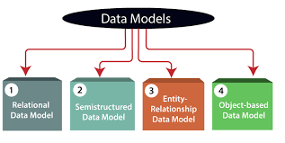
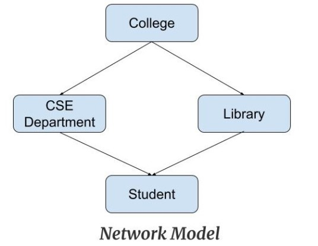
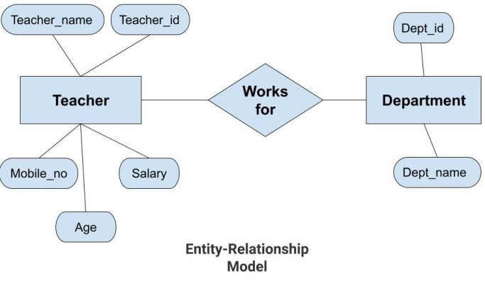
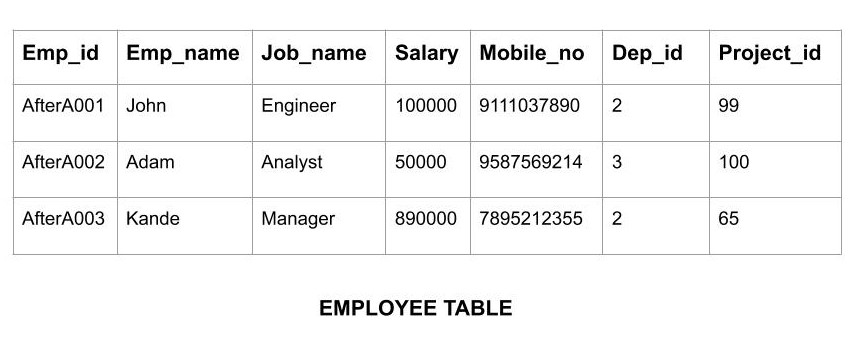

Data Model is the modeling of the data description, data semantics, and consistency constraints of the data. It provides the conceptual tools for describing the design of a database at each level of data abstraction. Therefore, there are following four data models used for understanding the structure of the database:
Hierarchical Model was the first DBMS model. This model organises the data in the hierarchical tree structure. The hierarchy starts from the root which has root data and then it expands in the form of a tree adding child node to the parent node. This model easily represents some of the real-world relationships like food recipes, sitemap of a website etc. Example: We can represent the relationship between the shoes present on a shopping website in the following way:

This model is an extension of the hierarchical model. It was the most popular model before the relational model. This model is the same as the hierarchical model, the only difference is that a record can have more than one parent. It replaces the hierarchical tree with a graph. Example: In the example below we can see that node student has two parents i.e. CSE Department and Library. This was earlier not possible in the hierarchical model.
Entity-Relationship Model or simply ER Model is a high-level data model diagram. In this model, we represent the real-world problem in the pictorial form to make it easy for the stakeholders to understand. It is also very easy for the developers to understand the system by just looking at the ER diagram. We use the ER diagram as a visual tool to represent an ER Model. ER diagram has the following three components:
Relational Model is the most widely used model. In this model, the data is maintained in the form of a two-dimensional table. All the information is stored in the form of row and columns. The basic structure of a relational model is tables. So, the tables are also called relations in the relational model. Example: In this example, we have an Employee table.
